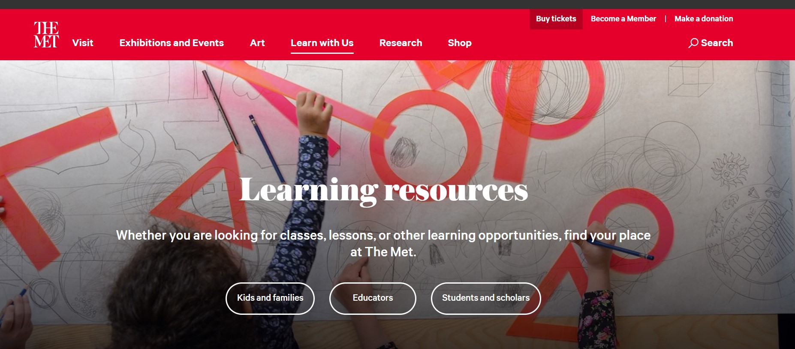
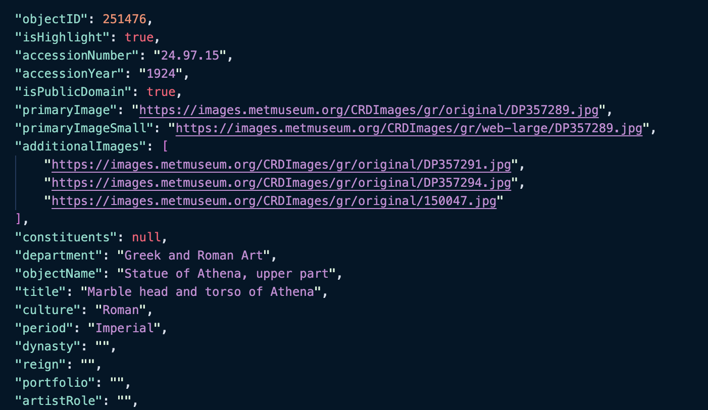

Evaluating the Digital Experience at the Metropolitan Museum of Art
Tereza Chanaki, Alyse Delaney, Riley Trist | INFO 654-02: Fall 2022
Topics of digital integration within the museum space are highly debated by museum boards and associations. Contemporary theorists are generally in favor of prioritizing digital content in the hopes of engaging modern, tech-savvy audiences; but this is a harder sell for museum boards who tend to resist spending money on something they can’t see the use of. They ask:
Why spend a million dollars on improving a museum’s map when the physical one can be handed out at the front?
This project intends to challenge both of those ideas by assessing the need for digital content and well-communicated digital content. Tech can drastically improve a museum experience, but not if the visitors don’t know the tech is there.
So this project asks:
How are digital components embedded in a cultural institution as large as the Met? And how does that affect the visitor and research experience inside and outside the museum building?
This project will assess the digital experience at the Metropolitan Museum of Art (Met) through three categories; The Mediated Experience, Beyond the Museum, and Data at the Met. Through these three topics, this project will take exhibition type into account — temporary, permanent western, and permanent non-western — and whether this changes the allocation and quality of digital resources and collection of information. By the end of this project, there will be a clear agenda for the Met’s next steps in their information technology department. This analysis will hopefully provide insight into future museum digital projects beyond our assessment of the Met’s digital performance.

The Mediated Experience
How is digital content integrated into the visitor experience? How does it increase accessibility? How does the design of the exhibition space encourage use of that digital content?
Beyond the Museum
How does the website facilitate education and post-visit exploration within different contexts including the classroom and at home?
Data at the Met
How does the museum provide access to its collection data? How does information the API reveals provide insights about collection use and the collection itself? How is the API currently being used by audiences?